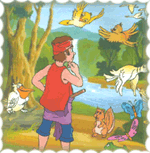
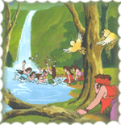
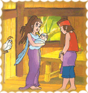
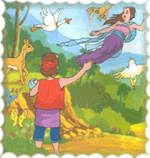

Telaga Bidadari
( Cerita Rakyat Kalimantan Selatan )
Dahulu kala, ada seorang pemuda yang tampan dan gagah. Ia bernama Awang Sukma. Awang Sukma mengembara sampai ke tengah hutan belantara. Ia tertegun melihat aneka macam kehidupan di dalam hutan. Ia membangun sebuah rumah pohon di sebuah dahan pohon yang sangat besar. 
Kehidupan di hutan rukun dan damai. Setelah lama tinggal di hutan, Awang Sukma diangkat menjadi penguasa daerah itu dan bergelar Datu. Sebulan sekali, Awang Sukma berkeliling daerah kekuasaannya dan sampailah ia di sebuah telaga yang jernih dan bening. Telaga tersebut terletak di bawah pohon yg rindang dengan buah-buahan yang banyak. Berbagai jenis burung dan serangga hidup dengan riangnya.
Keesokan harinya, ketika Datu Awang Sukma sedang meniup serulingnya, ia mendengar suara riuh rendah di telaga. Di sela-sela tumpukan batu yang bercelah, Datu Awang Sukma mengintip ke arah telaga. Betapa terkejutnya Awang Sukma ketika melihat ada 7 orang gadis cantik sedang bermain air.
Tujuh gadis cantik itu tidak sadar jika mereka sedang diperhatikan dan tidak menghiraukan selendang mereka yang digunakan untuk terbang, bertebaran di sekitar telaga. Salah satu selendang tersebut terletak di dekat Awang Sukma.
Mendengar suara dedaunan, para putri terkejut dan segera mengambil selendang masing-masing. Ketika ketujuh putri tersebut ingin terbang, ternyata ada salah seorang putri yang tidak menemukan pakaiannya. Ia telah ditinggal oleh keenam kakaknya. Saat itu, Datu Awang Sukma segera keluar dari persembunyiannya.
Datu Awang Sukma sangat mengagumi kecantikan Putri Bungsu. Demikian juga dengan Putri Bungsu. Ia merasa bahagia berada di dekat seorang yang tampan dan gagah perkasa. Akhirnya mereka memutuskan untuk menjadi suami istri. Setahun kemudian lahirlah seorang bayi perempuan yang cantik dan diberi nama Kumalasari. Kehidupan keluarga Datu Awang Sukma sangat bahagia.
Namun, pada suatu hari seekor ayam hitam naik ke atas lumbung dan mengais padi di atas permukaan lumbung. Putri Bungsu berusaha mengusir ayam tersebut. Tiba-tiba matanya tertuju pada sebuah bumbung bambu yang tergeletak di bekas kaisan ayam. Ketika bumbung dibuka, Putri Bungsu terkejut dan berteriak gembira. "Ini selendangku!, seru Putri Bungsu. Selendang itu pun didekapnya erat-erat. Perasaan kesal dan jengkel tertuju pada suaminya. Tetapi ia pun sangat sayang pada suaminya. Akhirnya Putri Bungsu membulatkan tekadnya untuk kembali ke kahyangan. "Kini saatnya aku harus kembali!," katanya dalam hati. Putri Bungsu segera mengenakan selendangnya sambil menggendong bayinya.
Datu Awang Sukma terpana melihat kejadian itu. Ia langsung mendekat dan minta maaf atas tindakan yang tidak terpuji yaitu menyembunyikan selendang Putri Bungsu. Datu Awang Sukma menyadari bahwa perpisahan tidak bisa dielakkan. "Kanda, dinda mohon peliharalah Kumalasari dengan baik," kata Putri Bungsu kepada Datu Awang Sukma." Pandangan Datu Awang Sukma menerawang kosong ke angkasa. "Jika anak kita merindukan dinda, ambillah tujuh biji kemiri, dan masukkan ke dalam bakul yang digoncang-goncangkan dan iringilah dengan lantunan seruling. Pasti dinda akan segera datang menemuinya," ujar Putri Bungsu.
Putri Bungsu segera mengenakan selendangnya dan seketika terbang ke kahyangan. Datu Awang Sukma menatap sedih dan bersumpah untuk melarang anak keturunannya memelihara ayam hitam yang dia anggap membawa malapetaka.